Visao Geral do Fluxo SDD
Visualizacao renderizada dos dois diagramas principais do fluxo operacional
deste projeto. Os arquivos-fonte Mermaid continuam em diagramas/*.mmd.
Fluxo Macro do Sistema

Fonte: diagramas/sdd-fluxo-macro.mmd
Fluxo Operacional do Backlog

Fonte: diagramas/sdd-backlog-estados.mmd